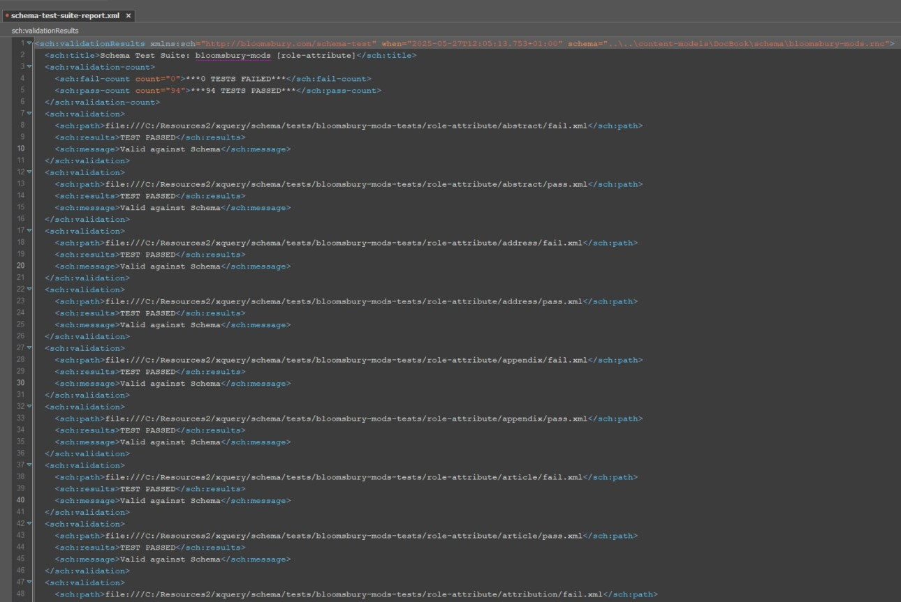

Test results are captured in human-readable, queryable reports, which are generated and exported in multiple formats. Built-in BaseX reporting includes the following:
Immediate user reporting is provided during the suite's execution and once it is complete. The trace() function offers logs during the validation process, which can be useful for debugging. The function returns the directory path for all items being tested in that execution run.
Example 6. Trace log
"Validating: C:\Resources2\xquery\schema\tests\bloomsbury-mods-tests\role-attribute\book\book-role-attribute-fullText\fail.xml"
"Validating: C:\Resources2\xquery\schema\tests\bloomsbury-mods-tests\role-attribute\book\book-role-attribute-fullText\pass.xml"
"Validating: C:\Resources2\xquery\schema\tests\bloomsbury-mods-tests\role-attribute\book\book-role-attribute-pdfOnly\fail.xml"
"Validating: C:\Resources2\xquery\schema\tests\bloomsbury-mods-tests\role-attribute\book\book-role-attribute-pdfOnly\pass.xml"
This summarises the test results in a user-friendly manner, displaying the number of test cases that pass and fail.
Example 7. Valid Test Cases
***0 TESTS FAILED***
***94 TESTS PASSED***
Further reporting is also provided in the scenario of a test case which fails validation. The reports will provide the following:
A direct path to the XML that failed the test suite validation.
Overview of the result.
Descriptive user error messages for easy debugging.
Example 8. Invalid Test Cases
***1 TESTS FAILED***
***93 TESTS PASSED***
<sch:validation xmlns:sch="http://bloomsbury.com/schema-test"> <sch:path>file:///C:/Resources2/xquery/schema/tests/bloomsbury-mods-tests/role-attribute/book/book-role-attribute-fullText/pass.xml</sch:path> <sch:results>***TEST FAILED***</sch:results> <sch:message> <report> <status>invalid</status> <message level="Error" line="1" column="115" url="file:///C:/Resources2/xquery/schema/tests/bloomsbury-mods-tests/role-attribute/book/book-role-attribute-fullText/pass.xml">value of attribute "role" is invalid; must be equal to "fullText" or "pdfOnly"</message> </report> </sch:message> </sch:validation>
<sch:validation xmlns:sch="http://bloomsbury.com/schema-test"> <sch:path>file:///C:/Resources2/xquery/schema/tests/bloomsbury-mods-tests/role-attribute/book/book-role-attribute-fullText/fail.xml</sch:path> <sch:results>***TEST FAILED***</sch:results> <sch:message>fail.xml valid against Schema which is incorrect</sch:message> </sch:validation>
Figure 1. XML file of schema report where test cases pass validation.
|  |
Figure 2. XML file of schema report where test cases fail validation.
HTML reports are generated through the transformation of XML reports via XSLT.
Figure 3. An HTML file of the schema report where test cases pass validation.
Figure 4. An HTML file of the schema report where test cases fail validation.